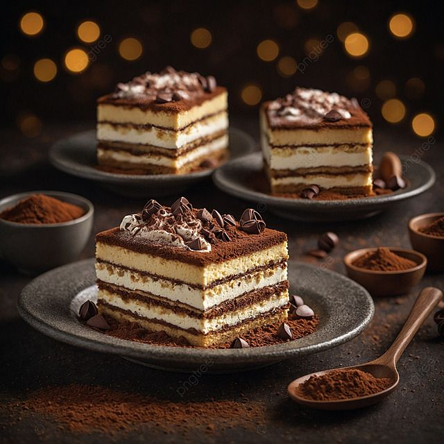

TIRAMISU RECIPE

30 minutes (plus 4–6 hours chilling in the fridge for best flavor and texture)
üçΩ Servings: 8
Show Ingredients
6 egg yolks
3/4 cup granulated sugar
2/3 cup milk
1 1/4 cups heavy cream
1/2 tsp vanilla extract
8 oz mascarpone cheese
1 cup strong brewed coffee, cooled
2 tbsp coffee liqueur (optional)
24 ladyfinger biscuits
2 tbsp cocoa powder (for dusting)
Show Steps
In a saucepan, whisk egg yolks and sugar until well blended.
Add milk and cook over medium heat, stirring constantly, until mixture boils; boil gently for 1 minute.
Remove from heat, cover, and chill in the fridge for 1 hour.
Whip heavy cream with vanilla until stiff peaks form.
In a bowl, beat mascarpone cheese until smooth.
Gently fold the chilled egg mixture into mascarpone, then fold in whipped cream.
Combine coffee and coffee liqueur in a shallow dish.
Quickly dip ladyfingers into coffee mixture and arrange in a single layer in a dish.
Spread half the cream mixture over ladyfingers, then repeat layers.
Dust with cocoa powder, cover, and chill for 4–6 hours before serving.
Start Cooking
Next Step